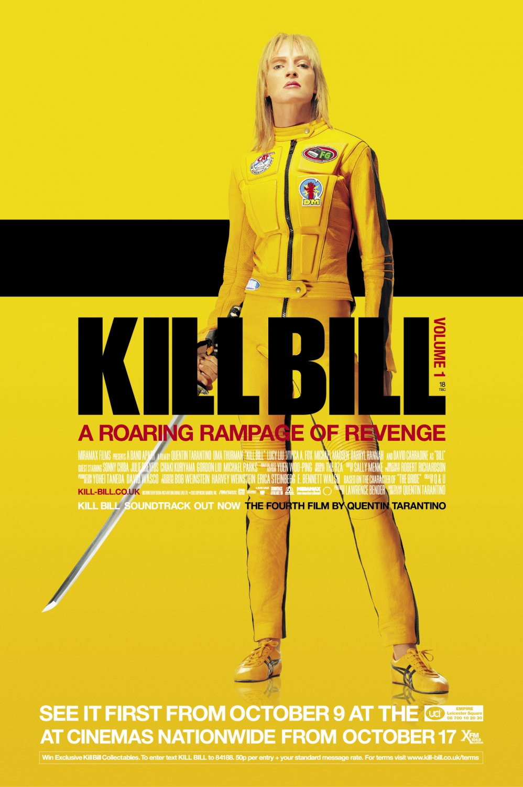
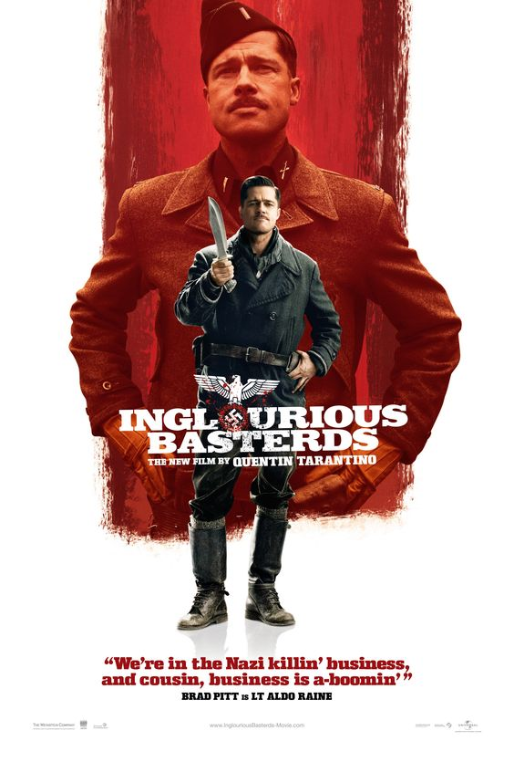

Quentin Tarantino é um dos diretores mais icônicos do cinema contemporâneo, reconhecido por sua narrativa não linear, diálogos marcantes e estética visual única. Com uma carreira que abrange 12 filmes, suas obras conquistaram sete Oscars e doze Globos de Ouro, consolidando seu impacto na sétima arte. Para celebrar seu legado, selecionamos os seis melhores longas-metragens dirigidos por Tarantino, destacando suas histórias envolventes e elencos estelares.
Especial Tarantino
Pulp Fiction
2h 34min
Vincent Vega (John Travolta) e Jules Winnfield (Samuel L. Jackson) são dois assassinos profissionais que trabalham fazendo cobranças para o gângster Marsellus Wallace (Ving Rhames). Vega enfrenta o desafio de sair com a esposa do chefe, enquanto o pugilista Butch Coolidge (Bruce Willis) se envolve em problemas ao vencer uma luta que deveria perder.
Kill Bill: Volume 1
1h 51min

A Noiva (Uma Thurman), uma ex-assassina, é traída por seu grupo no dia de seu casamento. Após cinco anos em coma, ela desperta com um único objetivo: vingar-se de seus antigos colegas, começando por Vernita Green (Vivica A. Fox) e O-Ren Ishii (Lucy Liu).
Inglourious Basterds
2h 33min

Durante a Segunda Guerra Mundial, o tenente Aldo Raine (Brad Pitt) lidera um grupo de soldados judeus em uma missão para matar nazistas. Paralelamente, Shosanna Dreyfuss (Mélanie Laurent) planeja sua vingança contra o coronel Hans Landa (Christoph Waltz) após a execução de sua família.